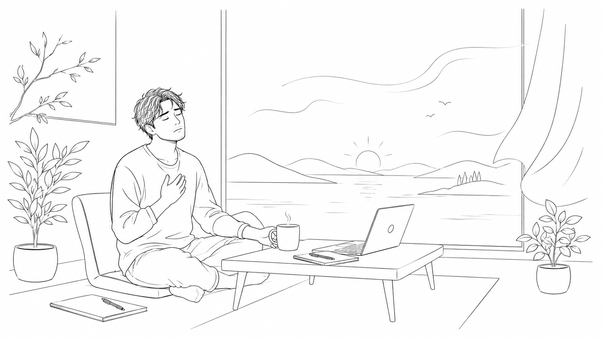

<!DOCTYPE html>
<html lang="en">
<head>
<meta charset="UTF-8" />
<meta name="viewport" content="width=device-width, initial-scale=1.0, viewport-fit=cover" />
<meta name="theme-color" content="#0f1411" />
<title>Daily Check-in and Recovery</title>
<link rel="preconnect" href="https://fonts.googleapis.com">
<link rel="preconnect" href="https://fonts.gstatic.com" crossorigin>
<link href="https://fonts.googleapis.com/css2?family=Cormorant+Garamond:wght@400;500&family=JetBrains+Mono:wght@400;500&display=swap" rel="stylesheet">
<style>
  * { box-sizing: border-box; -webkit-tap-highlight-color: transparent; }
  html, body { margin: 0; padding: 0; background: #0f1411; }
  body {
    font-family: 'Cormorant Garamond', Georgia, serif;
    color: #e8e3d5;
    min-height: 100vh;
    min-height: 100dvh;
  }
  button { font-family: inherit; }

  .response h2 {
    font-family: 'JetBrains Mono', monospace;
    font-size: 12px;
    letter-spacing: 0.2em;
    text-transform: uppercase;
    color: #c9a961;
    margin: 24px 0 12px 0;
    font-weight: 500;
  }
  .response h2:first-child { margin-top: 0; }
  .response ul {
    list-style: none;
    padding: 0;
    margin: 0;
  }
  .response li {
    font-size: 17px;
    line-height: 1.5;
    padding: 6px 0 6px 18px;
    position: relative;
  }
  .response li:before {
    content: "•";
    position: absolute;
    left: 0;
    color: #c9a961;
  }
  .response p { font-size: 17px; line-height: 1.5; margin: 8px 0; }
  .response strong { font-weight: 500; color: #f0e9d6; }

  @keyframes spin { to { transform: rotate(360deg); } }
  .spinner {
    width: 14px; height: 14px;
    border: 2px solid rgba(15, 20, 17, 0.3);
    border-top-color: #0f1411;
    border-radius: 50%;
    animation: spin 0.8s linear infinite;
    display: inline-block;
    vertical-align: middle;
    margin-right: 8px;
  }

  .intro-section {
    font-size: 16px;
    line-height: 1.55;
    color: rgba(232, 227, 213, 0.75);
  }
  .intro-section p { margin: 0 0 12px 0; }
  .intro-section p:last-child { margin-bottom: 0; }
  .intro-section .label {
    font-family: 'JetBrains Mono', monospace;
    font-size: 11px;
    letter-spacing: 0.2em;
    text-transform: uppercase;
    color: #c9a961;
    display: block;
    margin-bottom: 6px;
  }

  .copy-buttons {
    display: flex;
    gap: 8px;
    margin-top: 12px;
  }
  .copy-buttons button { flex: 1; }
  @media (max-width: 420px) {
    .copy-buttons { flex-direction: column; }
  }

  .helper-text {
    font-size: 16px;
    line-height: 1.55;
    color: rgba(232, 227, 213, 0.75);
    margin: 14px 0 0 0;
  }
</style>
</head>
<body>
<div id="root"></div>

<script src="https://unpkg.com/react@18/umd/react.production.min.js" crossorigin></script>
<script src="https://unpkg.com/react-dom@18/umd/react-dom.production.min.js" crossorigin></script>
<script src="https://unpkg.com/@babel/standalone/babel.min.js"></script>

<script type="text/babel">
const { useState } = React;

const WEBHOOK_URL = "https://n8n.veyyil.com/webhook/recovery";

const FIELDS = [
  { label: "Sleep", key: "sleep" },
  { label: "Physical health", key: "physical_health" },
  { label: "Physical energy", key: "physical_energy" },
  { label: "Cognitive ease", key: "cognitive_ease" },
  { label: "Focus", key: "focus" },
  { label: "Strategic clarity", key: "strategic_clarity" },
  { label: "Emotional stability", key: "emotional_stability" },
  { label: "Stresslessness", key: "stresslessness" },
];

const PROMPT_PREFIX = `You are a Founder Recovery Guide.

Help me recover clarity, calmness, energy, focus, and stability based on the scorecard below. I operate in high-pressure, high-cognition environments. Give practical, emotionally intelligent recovery advice that helps me get back to functioning well.

Tone: calm, simple, human, direct. No corporate, robotic, clinical, or therapeutic language. Talk to me like a trusted friend who knows what I need right now.

Score meanings:
1 = low, recovery needed
2 = medium, correction needed
3 = good, stable

CONSIDER THE CURRENT TIME OF DAY when giving advice. Before responding, check what time it currently is for me and tailor everything accordingly:
- Before 9 AM: sunlight, hydration, gentle movement, grounding
- 9 AM to 12 PM: focused but light tasks
- 12 PM to 4 PM: short recovery, food, walks, reducing overload
- 4 PM to 8 PM: slowing down, disengaging from work, lighter tasks
- 8 PM to 11 PM: wind down, no new work, prepare for rest
- 11 PM onwards: sleep is the only correct answer for almost any depletion. Do not suggest walks, journaling, or productivity at this hour.

Reference the time of day naturally in the situation report. Match the recovery actions to what is physically and socially appropriate for this hour.

Severity rules, apply BEFORE writing anything:
- If 5 or more factors are at 1: the only appropriate recovery action is sleep or deep rest. Do not suggest walks, snacks, journaling, or productivity tweaks. Tell me to stop everything and lie down.
- If 3 to 4 factors are at 1: prioritize rest and minimal effort recovery, light tasks only.
- If 1 to 2 factors are at 1: targeted micro-recoveries are fine.
- If Sleep, Physical Health, or Physical Energy is at 1: rest is mandatory regardless of other scores. Recovery actions must include a nap, lying down, or ending the day early.

Output exactly this format:

## Situation Report
A flowing 3-sentence paragraph covering: current state (mentioning the time of day), main bottleneck, recovery needed.

## Recovery Actions
5 to 8 short bullets. Each immediately actionable. Include one bullet for suitable work right now (or 'no work right now' if depleted) and one for work to avoid right now.

My current scorecard:
`;

function renderInline(text) {
  const parts = text.split(/(\*\*[^*]+\*\*)/g);
  return parts.map((part, i) => {
    if (part.startsWith("**") && part.endsWith("**")) {
      return <strong key={i}>{part.slice(2, -2)}</strong>;
    }
    return part;
  });
}

function renderMarkdown(text) {
  if (!text) return null;
  const lines = text.split("\n");
  const blocks = [];
  let currentList = null;
  const flushList = () => {
    if (currentList) {
      blocks.push({ type: "ul", items: currentList });
      currentList = null;
    }
  };
  lines.forEach((line) => {
    const trimmed = line.trim();
    if (!trimmed) { flushList(); return; }
    if (trimmed.startsWith("## ")) {
      flushList();
      blocks.push({ type: "h2", text: trimmed.slice(3) });
    } else if (trimmed.startsWith("•") || trimmed.startsWith("- ") || trimmed.startsWith("* ")) {
      const item = trimmed.replace(/^[•\-*]\s*/, "");
      if (!currentList) currentList = [];
      currentList.push(item);
    } else {
      flushList();
      blocks.push({ type: "p", text: trimmed });
    }
  });
  flushList();
  return blocks.map((b, i) => {
    if (b.type === "h2") return <h2 key={i}>{b.text}</h2>;
    if (b.type === "ul") return <ul key={i}>{b.items.map((it, j) => <li key={j}>{renderInline(it)}</li>)}</ul>;
    return <p key={i}>{renderInline(b.text)}</p>;
  });
}

async function copyToClipboard(text) {
  try {
    await navigator.clipboard.writeText(text);
    return true;
  } catch (err) {
    const ta = document.createElement("textarea");
    ta.value = text;
    ta.style.position = "fixed";
    ta.style.opacity = "0";
    document.body.appendChild(ta);
    ta.select();
    let ok = false;
    try { ok = document.execCommand("copy"); } catch (e) {}
    document.body.removeChild(ta);
    return ok;
  }
}

// Build a visual concept from the full response: situation report mood + all recovery actions
function extractVisualConcept(text) {
  if (!text) return "a quiet path leading into a misty forest at dawn";

  const situationMatch = text.match(/##\s*Situation Report([\s\S]*?)(?=##|$)/i);
  const actionsMatch = text.match(/##\s*Recovery Actions([\s\S]*?)(?=##|$)/i);

  const situationText = situationMatch ? situationMatch[1].toLowerCase() : "";
  const actionsText = actionsMatch ? actionsMatch[1].toLowerCase() : text.toLowerCase();
  const combinedText = situationText + " " + actionsText;

  // Score each scene concept by how many keyword matches it gets across the full text
  const conceptMap = [
    { weight: 0, keywords: ["nap", "sleep", "lying down", "lie down", "bed", "rest in bed", "deep rest"], scene: "a quiet bedroom with soft morning light, an unmade bed with a sleeping cat curled at the foot, a window with sheer curtains drifting" },
    { weight: 0, keywords: ["walk", "outside", "outdoor", "fresh air", "stroll"], scene: "a winding forest path with dappled sunlight through tall trees, soft moss on stones, gentle breeze moving leaves" },
    { weight: 0, keywords: ["water", "hydrate", "drink", "glass"], scene: "a clear glass of water on a wooden table beside an open window, soft light, a small plant nearby" },
    { weight: 0, keywords: ["sunlight", "sunshine", "morning light", "sunrise", "sun"], scene: "a soft sunrise over distant misty hills, golden light spilling across a calm lake, birds in flight" },
    { weight: 0, keywords: ["breath", "breathe", "breathing", "deep breath"], scene: "gentle waves lapping a calm sandy shore at dawn, soft mist, a single seabird in the sky" },
    { weight: 0, keywords: ["food", "snack", "eat", "meal", "nourish", "hungry"], scene: "a warm bowl of soup with fresh herbs and bread on a rustic wooden table, soft window light, a folded napkin" },
    { weight: 0, keywords: ["screen", "phone", "disconnect", "unplug", "device", "tab", "app"], scene: "an open journal and a fountain pen beside a window, fresh leaves outside, no screens, soft afternoon light" },
    { weight: 0, keywords: ["meditate", "stillness", "quiet", "silence", "calm mind"], scene: "a single old tree on a gentle hill under a soft cloudy sky, long grasses moving in the wind, a stone bench" },
    { weight: 0, keywords: ["stretch", "yoga", "movement", "gentle exercise", "body"], scene: "a quiet morning yoga mat by a large window with plants, soft light pooling on wooden floor, a folded blanket" },
    { weight: 0, keywords: ["journal", "write", "brain dump", "notebook", "pen", "paper"], scene: "an open journal with handwritten notes, a fountain pen resting on the page, a steaming mug beside it, warm desk lamp" },
    { weight: 0, keywords: ["nature", "park", "garden", "trees", "forest", "outside"], scene: "a peaceful garden path lined with flowering plants and ferns, dappled sunlight, a wooden bench under a tree" },
    { weight: 0, keywords: ["tea", "coffee", "warm drink", "mug", "cup"], scene: "a steaming cup of tea on a windowsill at dawn, mist on the glass, a folded book beside it" },
    { weight: 0, keywords: ["shower", "bath", "wash", "rinse"], scene: "soft water flowing over smooth river stones, dappled forest light, ferns nearby" },
    { weight: 0, keywords: ["drive", "travel", "leave", "road", "away"], scene: "an empty country road winding through gentle rolling hills at golden hour, soft clouds, distant trees" },
    { weight: 0, keywords: ["movie", "watch", "comfort", "cozy", "blanket", "couch"], scene: "a cozy armchair with a folded woollen blanket and a steaming mug, beside a window with rain softly falling" },
    { weight: 0, keywords: ["talk", "friend", "call", "connect", "people", "loved"], scene: "two empty wooden chairs facing each other on a porch overlooking a calm lake at sunset" },
    { weight: 0, keywords: ["end the day", "stop working", "shut down", "close laptop", "log off"], scene: "a closed laptop with a folded blanket beside it on a soft armchair, a warm lamp glowing, evening light through the window" },
    { weight: 0, keywords: ["light task", "admin", "simple work", "easy work", "low effort"], scene: "a tidy desk with a small open notebook, a single pen, a cup of tea, soft afternoon light filtering through curtains" },
    { weight: 0, keywords: ["overwhelm", "cluttered", "scattered", "fog", "stuck", "depleted"], scene: "mist clearing slowly over a still mountain lake at dawn, a small wooden dock, a single boat tied at rest" },
    { weight: 0, keywords: ["strong foundation", "stable", "solid", "grounded"], scene: "an old strong tree with deep roots on a calm hillside, soft golden afternoon light, distant mountains" },
  ];

  // Count keyword hits across combined text
  conceptMap.forEach(concept => {
    concept.keywords.forEach(kw => {
      const regex = new RegExp("\\b" + kw.replace(/[.*+?^${}()|[\]\\]/g, "\\$&"), "gi");
      const matches = combinedText.match(regex);
      if (matches) concept.weight += matches.length;
    });
  });

  // Sort by weight desc; pick top scene that has at least one hit
  conceptMap.sort((a, b) => b.weight - a.weight);
  const topConcept = conceptMap[0];

  if (topConcept.weight === 0) {
    return "a quiet path leading into a misty forest at dawn, soft light, gentle stillness";
  }

  // Sometimes blend top two if both have hits, for richer scenes
  if (conceptMap[1].weight > 0 && conceptMap[1].weight >= topConcept.weight * 0.6) {
    return topConcept.scene + ", with hints of " + conceptMap[1].scene.split(",")[0];
  }

  return topConcept.scene;
}

function buildPollinationsUrl(scene) {
  const fullPrompt =
    `Minimalist black ink line drawing on pure white background of ${scene}. ` +
    `Single thin continuous line art, no shading, no colour, no fill, no gradient. ` +
    `Hand-drawn illustration style, calming, meditative, serene. ` +
    `Pure white background, only black lines.`;
  const encoded = encodeURIComponent(fullPrompt);
  // Random seed each call so images vary; nologo to remove watermark
  const seed = Math.floor(Math.random() * 1000000);
  return `https://image.pollinations.ai/prompt/${encoded}?width=768&height=512&nologo=true&seed=${seed}&model=flux`;
}

function Scorecard() {
  const { useEffect } = React;
  const [ratings, setRatings] = useState(
    Object.fromEntries(FIELDS.map((f) => [f.key, 0]))
  );
  const [loading, setLoading] = useState(false);
  const [response, setResponse] = useState("");
  const [error, setError] = useState("");
  const [copied, setCopied] = useState("");
  const [imageUrl, setImageUrl] = useState("");
  const [imageLoaded, setImageLoaded] = useState(false);
  const [imageError, setImageError] = useState(false);
  const [imageTimedOut, setImageTimedOut] = useState(false);

  // Timeout: if image hasn't loaded in 20 seconds, show timeout state
  useEffect(() => {
    if (!imageUrl || imageLoaded || imageError) return;
    const timer = setTimeout(() => {
      if (!imageLoaded) setImageTimedOut(true);
    }, 20000);
    return () => clearTimeout(timer);
  }, [imageUrl, imageLoaded, imageError]);

  const regenerateImage = () => {
    if (!response) return;
    const scene = extractVisualConcept(response);
    setImageLoaded(false);
    setImageError(false);
    setImageTimedOut(false);
    setImageUrl(buildPollinationsUrl(scene));
  };

  const setRating = (key, value) => {
    setRatings((prev) => ({
      ...prev,
      [key]: prev[key] === value ? 0 : value,
    }));
    setCopied("");
  };

  const allRated = FIELDS.every((f) => ratings[f.key] > 0);

  const buildScorecard = () =>
    FIELDS.map((f) => `${f.label} : ${ratings[f.key] || "_"}`).join("\n");

  const buildScorecardWithPrompt = () => {
    const now = new Date();
    const timeString = now.toLocaleString(undefined, {
      weekday: "long",
      hour: "numeric",
      minute: "2-digit",
      hour12: true,
    });
    return PROMPT_PREFIX + "Current time: " + timeString + "\n\n" + buildScorecard();
  };

  const handleCopyPlain = async () => {
    const ok = await copyToClipboard(buildScorecard());
    if (ok) {
      setCopied("plain");
      setTimeout(() => setCopied(""), 2000);
    }
  };

  const handleCopyWithPrompt = async () => {
    const ok = await copyToClipboard(buildScorecardWithPrompt());
    if (ok) {
      setCopied("prompt");
      setTimeout(() => setCopied(""), 2000);
    }
  };

  const handleSubmit = async () => {
    setLoading(true);
    setError("");
    setResponse("");
    setImageUrl("");
    setImageLoaded(false);
    setImageError(false);
    setImageTimedOut(false);
    try {
      const res = await fetch(WEBHOOK_URL, {
        method: "POST",
        headers: { "Content-Type": "application/json" },
        body: JSON.stringify(ratings),
      });
      if (!res.ok) throw new Error(`HTTP ${res.status}`);
      const data = await res.json();
      const text = data.analysis || data.text || data.response || data.output || JSON.stringify(data);
      setResponse(text);
      const scene = extractVisualConcept(text);
      setImageUrl(buildPollinationsUrl(scene));
    } catch (err) {
      setError(err.message || "Request failed");
    } finally {
      setLoading(false);
    }
  };

  const handleReset = () => {
    setRatings(Object.fromEntries(FIELDS.map((f) => [f.key, 0])));
    setResponse("");
    setError("");
    setCopied("");
    setImageUrl("");
    setImageLoaded(false);
    setImageError(false);
    setImageTimedOut(false);
  };

  return (
    <div style={{
      minHeight: "100vh",
      padding: "32px 20px",
      display: "flex",
      justifyContent: "center",
    }}>
      <div style={{ width: "100%", maxWidth: 520 }}>

        <header style={{ marginBottom: 28 }}>
          

          <div style={{
            fontFamily: "'JetBrains Mono', monospace",
            fontSize: 11,
            letterSpacing: "0.25em",
            color: "#c9a961",
            textTransform: "uppercase",
            marginBottom: 8,
          }}>
            For Founders & Operators
          </div>
          <h1 style={{
            fontSize: 38,
            fontWeight: 500,
            letterSpacing: "-0.02em",
            margin: 0,
            lineHeight: 1.1,
          }}>
            Daily Check-in and Recovery
          </h1>
        </header>

        <section className="intro-section" style={{
          marginBottom: 36,
          padding: 20,
          background: "rgba(232, 227, 213, 0.04)",
          border: "1px solid rgba(232, 227, 213, 0.08)",
          borderRadius: 4,
        }}>
          <span className="label">How to use this</span>
          <p>
            Rate each of the eight factors below from 1 to 3 stars based on how you feel right now.
            <strong style={{ color: "#e8e3d5", fontWeight: 500 }}> 1 star</strong> means recovery is needed,
            <strong style={{ color: "#e8e3d5", fontWeight: 500 }}> 2 stars</strong> means correction is needed, and
            <strong style={{ color: "#e8e3d5", fontWeight: 500 }}> 3 stars</strong> means you're stable in that area.
          </p>
          <p>
            Hit <strong style={{ color: "#e8e3d5", fontWeight: 500 }}>Submit for Recovery Plan</strong> and you'll
            get a short situation report and a list of practical recovery actions tailored to your current state and the time of day.
          </p>
          <p>
            Best done once or twice a day, especially when you feel off and aren't sure why.
          </p>
        </section>

        <div style={{ display: "flex", flexDirection: "column", gap: 4 }}>
          {FIELDS.map((field, i) => (
            <div key={field.key} style={{
              display: "flex",
              alignItems: "center",
              justifyContent: "space-between",
              padding: "18px 0",
              borderBottom: i === FIELDS.length - 1 ? "none" : "1px solid rgba(232, 227, 213, 0.08)",
            }}>
              <span style={{ fontSize: 19, fontWeight: 400 }}>{field.label}</span>
              <div style={{ display: "flex", gap: 6 }}>
                {[1, 2, 3].map((star) => {
                  const active = ratings[field.key] >= star;
                  return (
                    <button
                      key={star}
                      onClick={() => setRating(field.key, star)}
                      aria-label={`${field.label} ${star} star${star > 1 ? "s" : ""}`}
                      style={{
                        background: "transparent",
                        border: "none",
                        padding: 4,
                        cursor: "pointer",
                        fontSize: 26,
                        lineHeight: 1,
                        color: active ? "#c9a961" : "rgba(232, 227, 213, 0.2)",
                        transition: "color 150ms ease",
                      }}
                    >★</button>
                  );
                })}
              </div>
            </div>
          ))}
        </div>

        {/* Submit button */}
        <button
          onClick={handleSubmit}
          disabled={!allRated || loading}
          style={{
            width: "100%",
            marginTop: 28,
            padding: "16px 20px",
            background: (allRated && !loading) ? "#c9a961" : "rgba(201, 169, 97, 0.2)",
            color: (allRated && !loading) ? "#0f1411" : "rgba(232, 227, 213, 0.4)",
            border: "none",
            borderRadius: 4,
            fontSize: 13,
            fontFamily: "'JetBrains Mono', monospace",
            letterSpacing: "0.15em",
            textTransform: "uppercase",
            cursor: (allRated && !loading) ? "pointer" : "not-allowed",
            transition: "background 150ms ease",
            fontWeight: 500,
          }}
        >
          {loading ? <><span className="spinner"></span>Generating Plan</> : "Submit for Recovery Plan"}
        </button>

        {/* Scorecard preview */}
        <div style={{
          marginTop: 28,
          padding: 20,
          background: "rgba(232, 227, 213, 0.04)",
          border: "1px solid rgba(232, 227, 213, 0.08)",
          borderRadius: 4,
          fontFamily: "'JetBrains Mono', monospace",
          fontSize: 13,
          lineHeight: 1.9,
          whiteSpace: "pre",
          color: allRated ? "#e8e3d5" : "rgba(232, 227, 213, 0.5)",
        }}>
          {buildScorecard()}
        </div>

        {/* Two copy buttons */}
        <div className="copy-buttons">
          <button
            onClick={handleCopyPlain}
            style={{
              padding: "12px 16px",
              background: "transparent",
              color: "#e8e3d5",
              border: "1px solid rgba(232, 227, 213, 0.2)",
              borderRadius: 4,
              fontSize: 11,
              fontFamily: "'JetBrains Mono', monospace",
              letterSpacing: "0.12em",
              textTransform: "uppercase",
              cursor: "pointer",
            }}
          >
            {copied === "plain" ? "Copied" : "Copy Scorecard"}
          </button>
          <button
            onClick={handleCopyWithPrompt}
            style={{
              padding: "12px 16px",
              background: "transparent",
              color: "#e8e3d5",
              border: "1px solid rgba(232, 227, 213, 0.2)",
              borderRadius: 4,
              fontSize: 11,
              fontFamily: "'JetBrains Mono', monospace",
              letterSpacing: "0.12em",
              textTransform: "uppercase",
              cursor: "pointer",
            }}
          >
            {copied === "prompt" ? "Copied" : "Copy Scorecard + Prompt"}
          </button>
        </div>

        <p className="helper-text">
          The <strong style={{ color: "#e8e3d5", fontWeight: 500 }}>Copy Scorecard</strong> button copies just the scores, useful for logging in a journal or sending to a friend.
          The <strong style={{ color: "#e8e3d5", fontWeight: 500 }}>Copy Scorecard + Prompt</strong> button copies the scores along with a ready-made prompt you can paste into any AI tool (ChatGPT, Claude, Gemini, etc.) to get a similar recovery plan. Useful if this tool is down or you're offline from this site.
        </p>

        <button
          onClick={handleReset}
          disabled={loading}
          style={{
            width: "100%",
            marginTop: 20,
            padding: "10px 20px",
            background: "transparent",
            color: "rgba(232, 227, 213, 0.5)",
            border: "1px solid rgba(232, 227, 213, 0.15)",
            borderRadius: 4,
            fontSize: 11,
            fontFamily: "'JetBrains Mono', monospace",
            letterSpacing: "0.15em",
            textTransform: "uppercase",
            cursor: loading ? "not-allowed" : "pointer",
            opacity: loading ? 0.5 : 1,
          }}
        >
          Reset
        </button>

        {error && (
          <div style={{
            marginTop: 24,
            padding: 16,
            background: "rgba(180, 60, 60, 0.1)",
            border: "1px solid rgba(180, 60, 60, 0.3)",
            borderRadius: 4,
            fontFamily: "'JetBrains Mono', monospace",
            fontSize: 12,
            color: "#d88080",
          }}>
            Error: {error}
          </div>
        )}

        {response && (
          <>
            {imageUrl && (
              <div style={{ marginTop: 32 }}>
                <div style={{
                  background: "#ffffff",
                  border: "1px solid rgba(232, 227, 213, 0.15)",
                  borderRadius: 4,
                  overflow: "hidden",
                  position: "relative",
                  minHeight: imageLoaded ? "auto" : 200,
                  display: "flex",
                  alignItems: "center",
                  justifyContent: "center",
                }}>
                  {!imageLoaded && !imageError && !imageTimedOut && (
                    <div style={{
                      position: "absolute",
                      fontFamily: "'JetBrains Mono', monospace",
                      fontSize: 11,
                      letterSpacing: "0.15em",
                      color: "rgba(15, 20, 17, 0.4)",
                      textTransform: "uppercase",
                      textAlign: "center",
                      padding: "0 20px",
                    }}>
                      Sketching a small moment for you…
                    </div>
                  )}
                  {(imageError || imageTimedOut) && !imageLoaded && (
                    <div style={{
                      padding: "32px 20px",
                      textAlign: "center",
                      fontFamily: "'JetBrains Mono', monospace",
                      fontSize: 11,
                      letterSpacing: "0.12em",
                      color: "rgba(15, 20, 17, 0.5)",
                      textTransform: "uppercase",
                    }}>
                      The sketch took too long. Try again using the button.
                    </div>
                  )}
                   setImageLoaded(true)}
                    onError={() => setImageError(true)}
                    style={{
                      width: "100%",
                      height: "auto",
                      display: imageLoaded ? "block" : "none",
                      opacity: imageLoaded ? 1 : 0,
                      transition: "opacity 400ms ease",
                    }}
                  />
                  <button
                    onClick={regenerateImage}
                    aria-label="Sketch another"
                    title="Sketch another"
                    style={{
                      position: "absolute",
                      bottom: 10,
                      right: 10,
                      width: 36,
                      height: 36,
                      padding: 0,
                      background: "rgba(15, 20, 17, 0.8)",
                      color: "#ffffff",
                      border: "none",
                      borderRadius: "50%",
                      cursor: "pointer",
                      display: "flex",
                      alignItems: "center",
                      justifyContent: "center",
                      backdropFilter: "blur(4px)",
                      transition: "background 150ms ease",
                    }}
                    onMouseEnter={e => e.currentTarget.style.background = "rgba(15, 20, 17, 1)"}
                    onMouseLeave={e => e.currentTarget.style.background = "rgba(15, 20, 17, 0.8)"}
                  >
                    <svg width="16" height="16" viewBox="0 0 24 24" fill="none" stroke="currentColor" strokeWidth="2" strokeLinecap="round" strokeLinejoin="round">
                      <path d="M21 12a9 9 0 1 1-3-6.7L21 8" />
                      <polyline points="21 3 21 8 16 8" />
                    </svg>
                  </button>
                </div>
              </div>
            )}
            <div className="response" style={{
              marginTop: imageUrl ? 16 : 32,
              padding: 24,
              background: "rgba(232, 227, 213, 0.04)",
              border: "1px solid rgba(232, 227, 213, 0.08)",
              borderRadius: 4,
            }}>
              {renderMarkdown(response)}
            </div>
          </>
        )}

        <footer style={{
          marginTop: 48,
          paddingTop: 24,
          borderTop: "1px solid rgba(232, 227, 213, 0.08)",
          fontFamily: "'JetBrains Mono', monospace",
          fontSize: 11,
          letterSpacing: "0.1em",
          color: "rgba(232, 227, 213, 0.35)",
          textAlign: "center",
        }}>
          A simple recovery tool for high-cognition operators.
        </footer>
      </div>
    </div>
  );
}

const root = ReactDOM.createRoot(document.getElementById("root"));
root.render(<Scorecard />);
</script>
</body>
</html>
